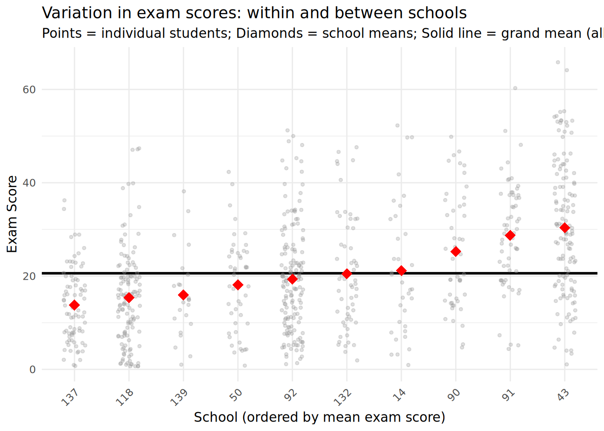
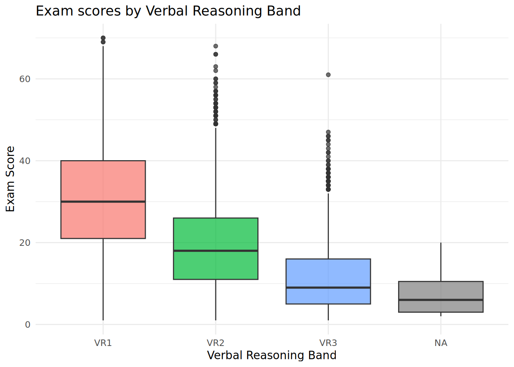
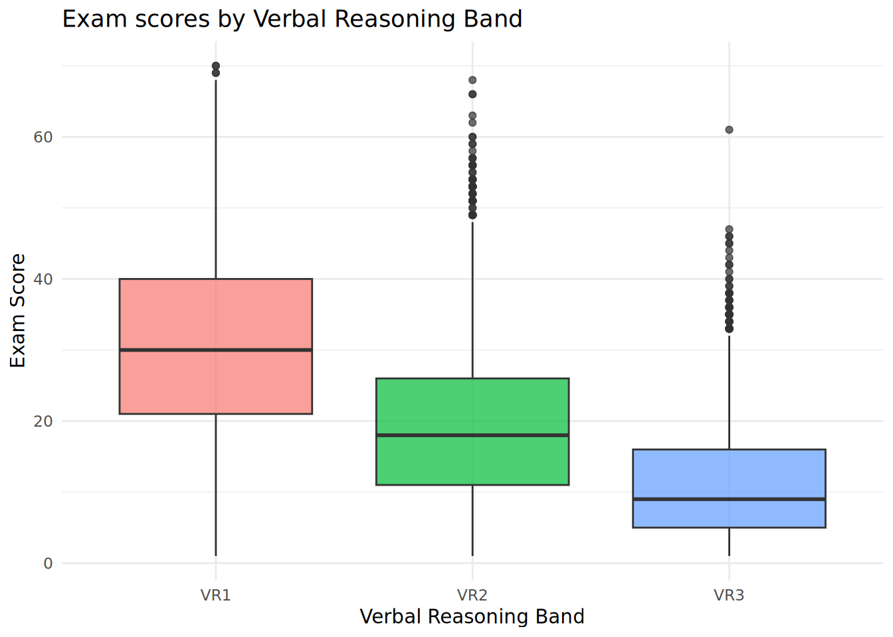
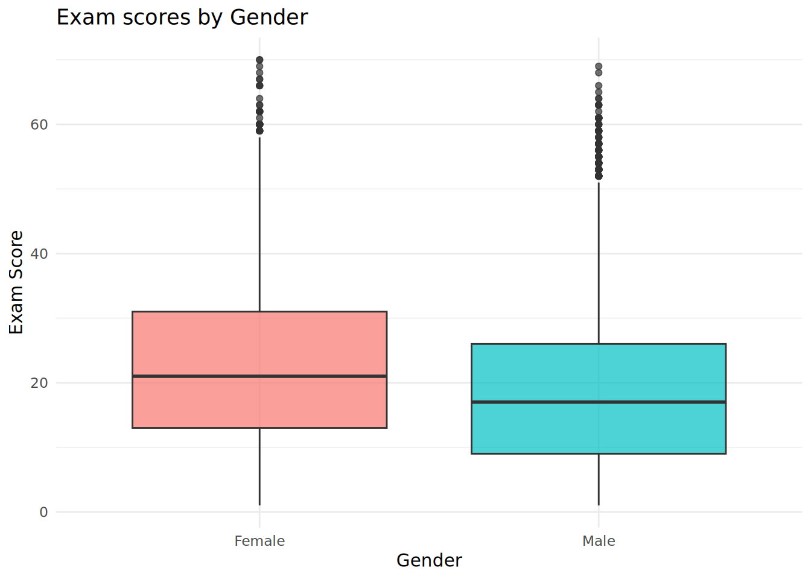
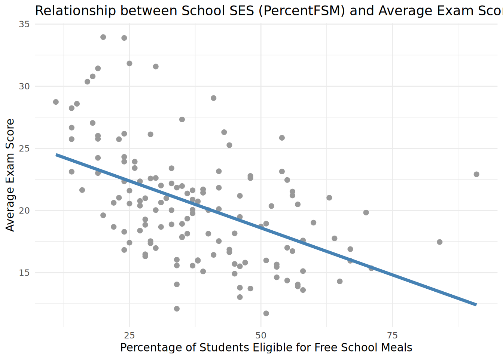
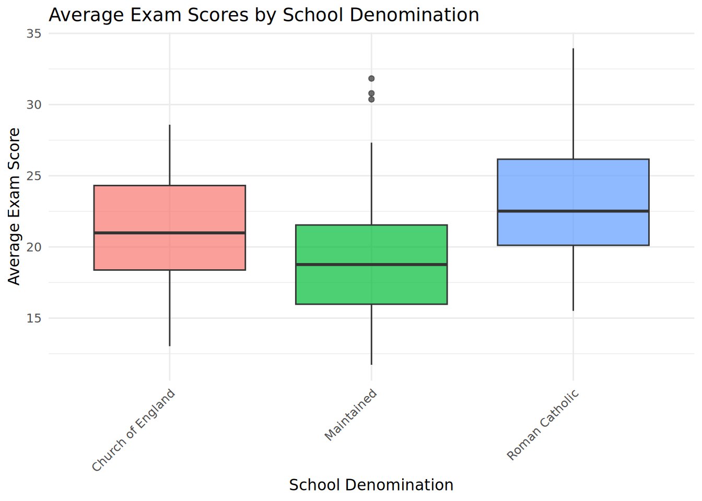
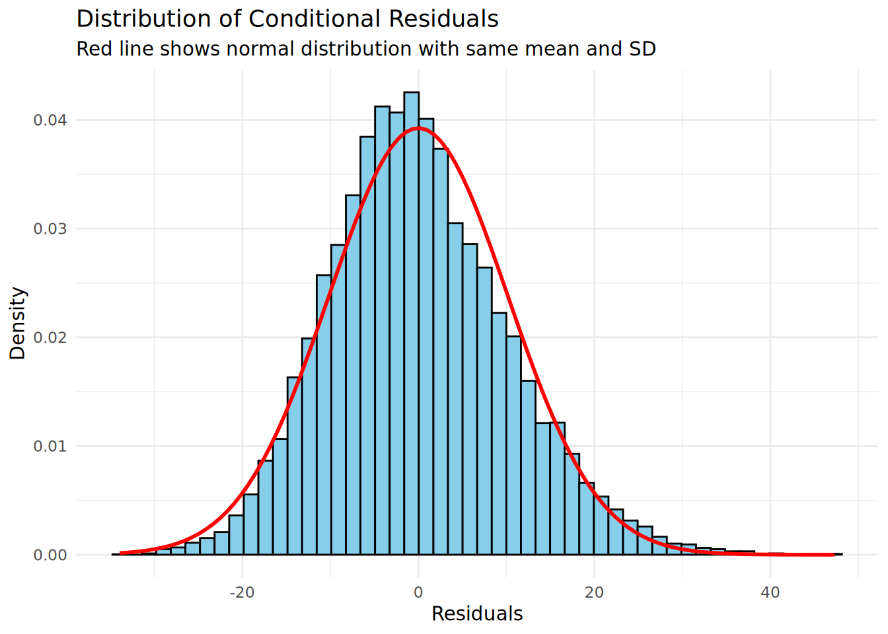
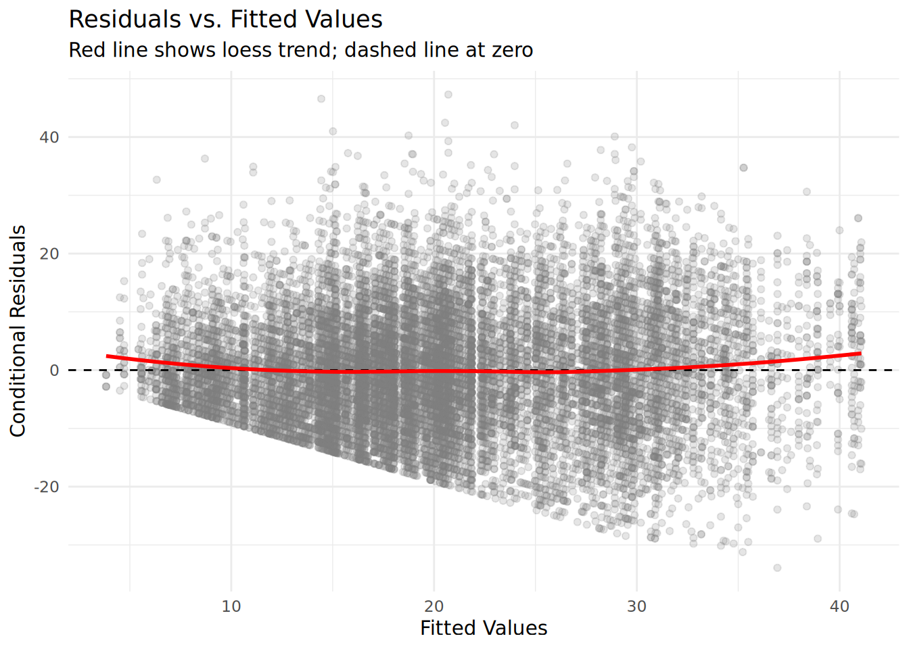
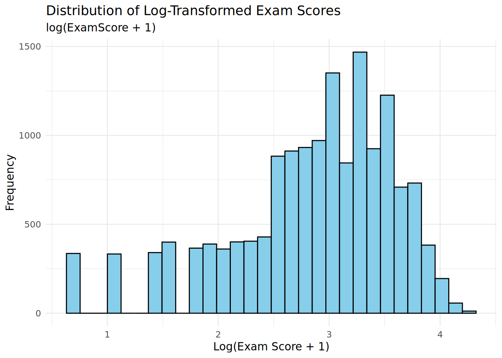
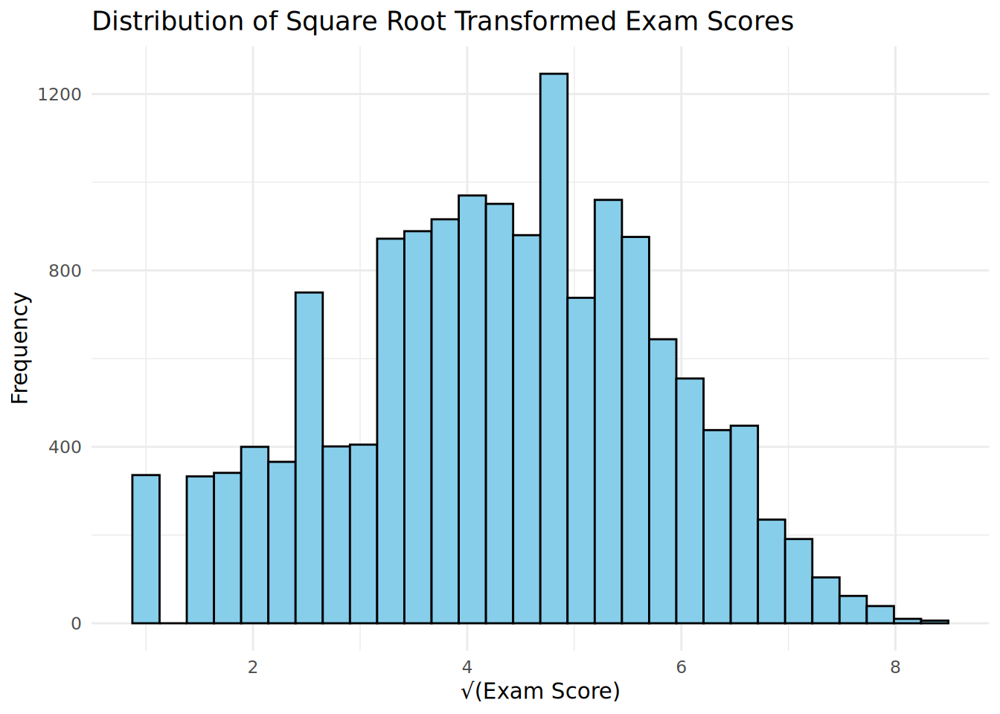

# Check whether pacman is available and install if needed
options(repos = c(CRAN = "https://cloud.r-project.org"))
if (!requireNamespace("pacman", quietly = TRUE)) install.packages("pacman")
# Use pacman to install (if needed) and load the required packages
pacman::p_load(dplyr, ggplot2, emmeans, lmerTest)Assignment 3: Multilevel Analysis of School Effectiveness
Model answer
ILEA School Effectiveness Data
The Inner London Education Authority (ILEA) dataset contains examination records of 15,362 students from 140 secondary schools over the years 1985, 1986, and 1987. This dataset was sourced from the data library of the Centre for Multilevel Modelling at the University of Bristol and is used to examine school effectiveness and the factors that influence student exam scores.
The dataset contains the following variables:
- School: A numeric variable representing the school identifier
- ExamScore: A numeric variable representing the exam score of each student
- PercentFSM: The percentage of students in the school eligible for free school meals (an indicator of socioeconomic status)
- Gender: A categorical variable representing the gender of the student
- VRBand: The verbal reasoning band of the student (VR1, VR2, or VR3)
- SchoolDenomination: The denomination of the school (Maintained, Church of England, Roman Catholic)
Exploratory Data Analysis
Let’s load the data and use the str() function to inspect the structure of the dataset.
# Load the ILEA data
ilea_data <- read.csv("/home/simalgo/projects/BeyondMLR/Assignments/Week 3/downloads/ilea_data.csv")
# Convert all character variables into factors
ilea_data <- ilea_data %>%
mutate(across(where(is.character), as.factor)) %>%
mutate(School = as.factor(School))
# Inspect the structure of the dataset
str(ilea_data)'data.frame': 15362 obs. of 6 variables:
$ School : Factor w/ 139 levels "1","2","3","4",..: 1 1 1 1 1 1 1 1 1 1 ...
$ ExamScore : int 17 5 16 12 7 20 15 16 26 5 ...
$ PercentFSM : int 24 24 24 24 24 24 24 24 24 24 ...
$ Gender : Factor w/ 2 levels "Female","Male": 2 2 2 2 2 1 1 1 1 1 ...
$ VRBand : Factor w/ 3 levels "VR1","VR2","VR3": 2 2 2 2 2 2 2 3 2 2 ...
$ SchoolDenomination: Factor w/ 3 levels "Church of England",..: 2 2 2 2 2 2 2 2 2 2 ...This initial inspection makes clear that the ILEA dataset has a hierarchical structure: 15,362 individual students are nested within 140 schools. This is a two-level hierarchical structure with students (level 1) nested within schools (level 2).
Grouping structure
To get a better feeling for the grouping structure, we create a summary table showing the number of students within each school and visualize it with a bar chart:
# Create a summary table showing students per school
school_summary <- ilea_data %>%
group_by(School) %>%
summarise(num_students = n(), .groups = "drop") %>%
arrange(desc(num_students))
# Display summary statistics for the number of students per school
summary(school_summary$num_students) Min. 1st Qu. Median Mean 3rd Qu. Max.
22.0 64.5 103.0 110.5 150.5 251.0 # Create a histogram showing the distribution of school sizes
ggplot(school_summary, aes(x = num_students)) +
geom_histogram(bins = 20, fill = "skyblue", color = "black") +
labs(title = "Distribution of School Sizes",
x = "Number of Students",
y = "Frequency") +
theme_minimal()
The distribution shows substantial variation in school sizes, with most schools having between 50 and 150 students.
Outcome variable
Next, we create a histogram to visualize the distribution of the outcome variable ExamScore:
# Create a histogram of ExamScore
ggplot(ilea_data, aes(x = ExamScore)) +
geom_histogram(bins = 30, fill = "skyblue", color = "black") +
labs(title = "Distribution of Exam Scores",
x = "Exam Score",
y = "Frequency") +
theme_minimal()
The distribution of exam scores is right-skewed with a notable floor effect: a substantial number of students scored zero or near-zero on the exam. This floor effect occurs because exam scores are bounded at zero - students cannot score below this minimum. Such distributional characteristics may lead to heteroscedasticity in the residuals, which we will examine in the model diagnostics section.
Variance components
We also want to get a sense of the variability in exam scores within and between schools. For this, we are going to randomly select 10 schools and create a scatter plot with the exam score on the y-axis and the school on the x-axis:
# Set seed for reproducibility
set.seed(123)
# Randomly select 10 unique schools
random_schools <- sample(unique(ilea_data$School), size = 10)
# Filter the data to include only the randomly selected schools
random_school_data <- ilea_data %>%
filter(School %in% random_schools)
# Calculate the average ExamScore for each school
school_avg_score <- random_school_data %>%
group_by(School) %>%
summarise(avg_exam_score = mean(ExamScore, na.rm = TRUE), .groups = "drop")
# Calculate the overall grand mean across all schools
grand_mean <- mean(ilea_data$ExamScore, na.rm = TRUE)
# Create scatter plot with jittered observations
ggplot(random_school_data, aes(x = reorder(School, ExamScore, FUN = mean), y = ExamScore)) +
geom_hline(yintercept = grand_mean, linetype = "solid", color = "black", linewidth = 1) +
geom_jitter(alpha = 0.3, width = 0.2, size = 1, color = "gray60") +
geom_point(data = school_avg_score, aes(x = School, y = avg_exam_score),
size = 4, shape = 18, color = "red") +
labs(title = "Variation in exam scores: within and between schools",
subtitle = "Points = individual students; Diamonds = school means; Solid line = grand mean (all data)",
x = "School (ordered by mean exam score)",
y = "Exam Score") +
theme_minimal() +
theme(axis.text.x = element_text(angle = 45, hjust = 1))
This plot reveals both within-school variability (the spread of individual student scores around their school mean) and between-school variability (the differences in school means from the grand mean). The red diamonds show that schools differ in their average exam scores, suggesting that school-level factors may influence student performance.
Covariate effects
Before fitting models with covariates, it is useful to explore the relationships between potential predictors and the outcome variable.
First, let’s examine how exam scores vary across different verbal reasoning bands:
# Boxplot for VRBand vs ExamScore
ggplot(ilea_data, aes(x = VRBand, y = ExamScore, fill = VRBand)) +
geom_boxplot(alpha = 0.7) +
labs(title = "Exam scores by Verbal Reasoning Band",
x = "Verbal Reasoning Band",
y = "Exam Score") +
theme_minimal() +
theme(legend.position = "none")
Note that the plot above includes an NA category for students with missing VRBand values. This is default ggplot2 behavior. To exclude missing values from the plot, we can filter them out before plotting:
# Boxplot for VRBand vs ExamScore (excluding missing values)
ilea_data %>%
filter(!is.na(VRBand)) %>%
ggplot(aes(x = VRBand, y = ExamScore, fill = VRBand)) +
geom_boxplot(alpha = 0.7) +
labs(title = "Exam scores by Verbal Reasoning Band",
x = "Verbal Reasoning Band",
y = "Exam Score") +
theme_minimal() +
theme(legend.position = "none")
Next, let’s examine how exam scores differ by gender:
# Boxplot for Gender vs ExamScore
ggplot(ilea_data, aes(x = Gender, y = ExamScore, fill = Gender)) +
geom_boxplot(alpha = 0.7) +
labs(title = "Exam scores by Gender",
x = "Gender",
y = "Exam Score") +
theme_minimal() +
theme(legend.position = "none")
Now let’s explore the relationship between PercentFSM (school-level socioeconomic indicator) and exam scores:
# Create a school-level summary with average exam scores and PercentFSM
school_level_data <- ilea_data %>%
group_by(School) %>%
summarise(
avg_exam_score = mean(ExamScore, na.rm = TRUE),
PercentFSM = first(PercentFSM),
SchoolDenomination = first(SchoolDenomination),
.groups = "drop"
)
# Scatterplot of school average exam score vs PercentFSM
ggplot(school_level_data, aes(x = PercentFSM, y = avg_exam_score)) +
geom_point(color = "gray60", size = 2) +
geom_smooth(method = "lm", se = FALSE, color = "steelblue", linewidth = 1.5) +
labs(title = "Relationship between School SES (PercentFSM) and Average Exam Score",
x = "Percentage of Students Eligible for Free School Meals",
y = "Average Exam Score") +
theme_minimal()
Finally, let’s examine exam scores by school denomination:
# Boxplot for SchoolDenomination vs ExamScore (using school-level averages)
ggplot(school_level_data, aes(x = SchoolDenomination, y = avg_exam_score, fill = SchoolDenomination)) +
geom_boxplot(alpha = 0.7) +
labs(title = "Average Exam Scores by School Denomination",
x = "School Denomination",
y = "Average Exam Score") +
theme_minimal() +
theme(legend.position = "none",
axis.text.x = element_text(angle = 45, hjust = 1))
Random intercept model (null model)
To partition the variance in exam scores between students and schools, we start by fitting a null model (random intercept model without any predictors):
# Fit the null model (random intercept only)
null_model <- lmer(ExamScore ~ 1 + (1 | School), data = ilea_data)
summary(null_model)Linear mixed model fit by REML. t-tests use Satterthwaite's method [
lmerModLmerTest]
Formula: ExamScore ~ 1 + (1 | School)
Data: ilea_data
REML criterion at convergence: 120364.7
Scaled residuals:
Min 1Q Median 3Q Max
-2.4962 -0.7550 -0.1073 0.6290 4.0683
Random effects:
Groups Name Variance Std.Dev.
School (Intercept) 19.52 4.419
Residual 144.53 12.022
Number of obs: 15362, groups: School, 139
Fixed effects:
Estimate Std. Error df t value Pr(>|t|)
(Intercept) 20.4527 0.3913 135.8938 52.27 <2e-16 ***
---
Signif. codes: 0 '***' 0.001 '**' 0.01 '*' 0.05 '.' 0.1 ' ' 1From the variance components, we can calculate the Intraclass Correlation Coefficient (ICC):
# Extract variance components
var_between <- as.data.frame(VarCorr(null_model))$vcov[1]
var_within <- as.data.frame(VarCorr(null_model))$vcov[2]
# Calculate ICC
ICC <- var_between / (var_between + var_within)
cat("Between-school variance:", round(var_between, 2), "\n")Between-school variance: 19.52 cat("Within-school variance:", round(var_within, 2), "\n")Within-school variance: 144.53 cat("Intraclass Correlation Coefficient (ICC):", round(ICC, 3), "\n")Intraclass Correlation Coefficient (ICC): 0.119 The ICC indicates that approximately 11.9% of the total variability in exam scores can be attributed to differences between schools, while the remaining 88.1% is due to differences between students within schools. This suggests that while most of the variability in exam scores is at the student level, there is still meaningful variation between schools that warrants a multilevel approach.
Extending the random intercept model with individual-level variables
As a second step, we extend the random intercept model with individual-level variables (Gender and VRBand). To facilitate the interpretation of the model coefficients, we use effects coding for categorical variables:
# Use effects coding for the categorical variables
options(contrasts = c("contr.sum", "contr.poly"))
# Fit the random intercept model with individual-level variables
model_L1 <- lmer(ExamScore ~ Gender + VRBand + (1 | School), data = ilea_data)
summary(model_L1)Linear mixed model fit by REML. t-tests use Satterthwaite's method [
lmerModLmerTest]
Formula: ExamScore ~ Gender + VRBand + (1 | School)
Data: ilea_data
REML criterion at convergence: 115230.3
Scaled residuals:
Min 1Q Median 3Q Max
-3.2419 -0.6751 -0.0707 0.6204 4.6713
Random effects:
Groups Name Variance Std.Dev.
School (Intercept) 12.1 3.479
Residual 104.3 10.214
Number of obs: 15347, groups: School, 139
Fixed effects:
Estimate Std. Error df t value Pr(>|t|)
(Intercept) 20.1630 0.3123 138.0603 64.572 <2e-16 ***
Gender1 1.4029 0.1166 9890.3703 12.027 <2e-16 ***
VRBand1 9.7789 0.1309 15279.0725 74.689 <2e-16 ***
VRBand2 -1.0408 0.1116 15233.0240 -9.326 <2e-16 ***
---
Signif. codes: 0 '***' 0.001 '**' 0.01 '*' 0.05 '.' 0.1 ' ' 1
Correlation of Fixed Effects:
(Intr) Gendr1 VRBnd1
Gender1 -0.014
VRBand1 0.013 0.003
VRBand2 -0.114 -0.022 -0.316# Display the coding scheme for the categorical variables
cat("\nContrasts for Gender:\n")
Contrasts for Gender:contrasts(ilea_data$Gender) [,1]
Female 1
Male -1cat("\nContrasts for VRBand:\n")
Contrasts for VRBand:contrasts(ilea_data$VRBand) [,1] [,2]
VR1 1 0
VR2 0 1
VR3 -1 -1# Obtain the ANOVA table for the individual-level variables
anova(model_L1)Type III Analysis of Variance Table with Satterthwaite's method
Sum Sq Mean Sq NumDF DenDF F value Pr(>F)
Gender 15090 15090 1 9890.4 144.64 < 2.2e-16 ***
VRBand 605573 302786 2 15259.3 2902.24 < 2.2e-16 ***
---
Signif. codes: 0 '***' 0.001 '**' 0.01 '*' 0.05 '.' 0.1 ' ' 1The results show that both Gender and VRBand are significant predictors of exam scores. With effects coding:
- The intercept represents the grand mean exam score across all groups
- The coefficient for Gender1 (Female = 1) indicates how much the mean for females differs from the grand mean; males differ by the same amount in the opposite direction
- The coefficients for VRBand indicate how much each verbal reasoning band differs from the grand mean
Let’s examine how the variance components have changed:
# Extract variance components from the model with L1 variables
var_between_L1 <- as.data.frame(VarCorr(model_L1))$vcov[1]
var_within_L1 <- as.data.frame(VarCorr(model_L1))$vcov[2]
cat("After adding individual-level variables:\n")After adding individual-level variables:cat("Between-school variance:", round(var_between_L1, 2), "(was", round(var_between, 2), ")\n")Between-school variance: 12.1 (was 19.52 )cat("Within-school variance:", round(var_within_L1, 2), "(was", round(var_within, 2), ")\n")Within-school variance: 104.33 (was 144.53 )The inclusion of individual-level variables primarily reduces the within-school variance because these variables (Gender and VRBand) explain differences between students within the same school.
Including context-level variables
As a third step, we extend the model with context-level variables (PercentFSM and SchoolDenomination). We start by centering the continuous context-level variable:
# Center the context-level variable
ilea_data <- ilea_data %>%
mutate(PercentFSM_c = scale(PercentFSM, scale = FALSE))
# Fit the random intercept model with individual-level and context-level variables
model_L1L2 <- lmer(ExamScore ~ Gender + VRBand + PercentFSM_c + SchoolDenomination + (1 | School), data = ilea_data)
summary(model_L1L2)Linear mixed model fit by REML. t-tests use Satterthwaite's method [
lmerModLmerTest]
Formula: ExamScore ~ Gender + VRBand + PercentFSM_c + SchoolDenomination +
(1 | School)
Data: ilea_data
REML criterion at convergence: 115220.6
Scaled residuals:
Min 1Q Median 3Q Max
-3.2472 -0.6746 -0.0683 0.6213 4.6762
Random effects:
Groups Name Variance Std.Dev.
School (Intercept) 10.83 3.291
Residual 104.33 10.214
Number of obs: 15347, groups: School, 139
Fixed effects:
Estimate Std. Error df t value Pr(>|t|)
(Intercept) 2.070e+01 3.676e-01 1.252e+02 56.293 <2e-16 ***
Gender1 1.398e+00 1.163e-01 8.937e+03 12.026 <2e-16 ***
VRBand1 9.772e+00 1.310e-01 1.526e+04 74.607 <2e-16 ***
VRBand2 -1.042e+00 1.116e-01 1.523e+04 -9.334 <2e-16 ***
PercentFSM_c 1.131e-03 1.082e-02 1.753e+03 0.105 0.9167
SchoolDenomination1 -1.215e-01 6.076e-01 1.215e+02 -0.200 0.8418
SchoolDenomination2 -1.389e+00 4.279e-01 1.260e+02 -3.246 0.0015 **
---
Signif. codes: 0 '***' 0.001 '**' 0.01 '*' 0.05 '.' 0.1 ' ' 1
Correlation of Fixed Effects:
(Intr) Gendr1 VRBnd1 VRBnd2 PrFSM_ SchlD1
Gender1 -0.031
VRBand1 0.005 0.004
VRBand2 -0.096 -0.023 -0.316
PercntFSM_c 0.042 0.022 0.024 -0.001
SchlDnmntn1 0.456 -0.022 0.002 0.002 0.050
SchlDnmntn2 -0.565 0.033 0.013 0.000 -0.142 -0.573# Obtain the ANOVA table
anova(model_L1L2)Type III Analysis of Variance Table with Satterthwaite's method
Sum Sq Mean Sq NumDF DenDF F value Pr(>F)
Gender 15088 15088 1 8936.5 144.6163 < 2.2e-16 ***
VRBand 604156 302078 2 15244.0 2895.3715 < 2.2e-16 ***
PercentFSM_c 1 1 1 1752.6 0.0109 0.9167420
SchoolDenomination 1759 879 2 124.7 8.4288 0.0003686 ***
---
Signif. codes: 0 '***' 0.001 '**' 0.01 '*' 0.05 '.' 0.1 ' ' 1Let’s examine how the variance components have changed:
# Extract variance components from the model with L1 and L2 variables
var_between_L1L2 <- as.data.frame(VarCorr(model_L1L2))$vcov[1]
var_within_L1L2 <- as.data.frame(VarCorr(model_L1L2))$vcov[2]
cat("After adding context-level variables:\n")After adding context-level variables:cat("Between-school variance:", round(var_between_L1L2, 2), "(was", round(var_between_L1, 2), ")\n")Between-school variance: 10.83 (was 12.1 )cat("Within-school variance:", round(var_within_L1L2, 2), "(was", round(var_within_L1, 2), ")\n")Within-school variance: 104.33 (was 104.33 )# Calculate proportion of between-school variance explained
prop_explained <- (var_between_L1 - var_between_L1L2) / var_between_L1
cat("\nProportion of between-school variance explained by context-level variables:", round(prop_explained * 100, 1), "%\n")
Proportion of between-school variance explained by context-level variables: 10.5 %The inclusion of context-level variables primarily reduces the between-school variance, as these variables explain differences between schools.
Model selection using stepwise elimination
To obtain a more parsimonious model, we can use the step() function from the lmerTest package to perform backward elimination of fixed-effect terms:
# Perform stepwise selection to identify the most important predictors
# Set reduce.random = FALSE to only eliminate fixed effects (not random effects)
step(model_L1L2, reduce.random = FALSE)Backward reduced random-effect table:
Eliminated npar logLik AIC LRT Df Pr(>Chisq)
<none> 9 -57610 115239
(1 | School) 0 8 -58050 116116 879.47 1 < 2.2e-16 ***
---
Signif. codes: 0 '***' 0.001 '**' 0.01 '*' 0.05 '.' 0.1 ' ' 1
Backward reduced fixed-effect table:
Degrees of freedom method: Satterthwaite
Eliminated Sum Sq Mean Sq NumDF DenDF F value Pr(>F)
PercentFSM_c 1 1 1 1 1752.6 0.0109 0.9167420
Gender 0 15105 15105 1 9141.4 144.7771 < 2.2e-16
VRBand 0 604523 302261 2 15260.5 2897.1818 < 2.2e-16
SchoolDenomination 0 1789 895 2 132.0 8.5744 0.0003154
PercentFSM_c
Gender ***
VRBand ***
SchoolDenomination ***
---
Signif. codes: 0 '***' 0.001 '**' 0.01 '*' 0.05 '.' 0.1 ' ' 1
Model found:
ExamScore ~ Gender + VRBand + SchoolDenomination + (1 | School)Exploring cross-level interactions
Finally, we explore potential cross-level interactions. The relationship between individual-level variables (such as VRBand) and exam scores may depend on school-level characteristics (such as PercentFSM or SchoolDenomination).
For example, we might hypothesize that the gap between high-ability (VR1) and low-ability (VR3) students differs depending on the socioeconomic composition of the school.
# Fit model with VRBand × PercentFSM interaction
model_interaction <- lmer(ExamScore ~ Gender + VRBand * PercentFSM_c + SchoolDenomination + (1 | School), data = ilea_data)
summary(model_interaction)Linear mixed model fit by REML. t-tests use Satterthwaite's method [
lmerModLmerTest]
Formula: ExamScore ~ Gender + VRBand * PercentFSM_c + SchoolDenomination +
(1 | School)
Data: ilea_data
REML criterion at convergence: 115212.4
Scaled residuals:
Min 1Q Median 3Q Max
-3.3241 -0.6760 -0.0683 0.6258 4.6334
Random effects:
Groups Name Variance Std.Dev.
School (Intercept) 10.7 3.271
Residual 104.2 10.207
Number of obs: 15347, groups: School, 139
Fixed effects:
Estimate Std. Error df t value Pr(>|t|)
(Intercept) 2.063e+01 3.659e-01 1.250e+02 56.393 < 2e-16 ***
Gender1 1.391e+00 1.162e-01 8.852e+03 11.978 < 2e-16 ***
VRBand1 9.743e+00 1.319e-01 1.526e+04 73.878 < 2e-16 ***
VRBand2 -9.697e-01 1.125e-01 1.523e+04 -8.616 < 2e-16 ***
PercentFSM_c 3.452e-03 1.104e-02 1.875e+03 0.313 0.75458
SchoolDenomination1 -8.879e-02 6.043e-01 1.210e+02 -0.147 0.88342
SchoolDenomination2 -1.418e+00 4.256e-01 1.255e+02 -3.331 0.00114 **
VRBand1:PercentFSM_c -4.181e-02 8.871e-03 1.532e+04 -4.713 2.46e-06 ***
VRBand2:PercentFSM_c 2.624e-03 7.442e-03 1.525e+04 0.353 0.72436
---
Signif. codes: 0 '***' 0.001 '**' 0.01 '*' 0.05 '.' 0.1 ' ' 1
Correlation of Fixed Effects:
(Intr) Gendr1 VRBnd1 VRBnd2 PrFSM_ SchlD1 SchlD2 VRB1:P
Gender1 -0.031
VRBand1 0.005 0.005
VRBand2 -0.101 -0.024 -0.313
PercntFSM_c 0.037 0.021 0.045 0.011
SchlDnmntn1 0.455 -0.022 0.001 0.003 0.049
SchlDnmntn2 -0.564 0.033 0.014 -0.002 -0.139 -0.573
VRBn1:PFSM_ 0.031 0.013 0.073 -0.118 0.008 -0.012 0.015
VRBn2:PFSM_ 0.008 -0.002 -0.118 -0.020 -0.199 0.004 -0.006 -0.335# Test the interaction terms
drop1(model_interaction)Single term deletions using Satterthwaite's method:
Model:
ExamScore ~ Gender + VRBand * PercentFSM_c + SchoolDenomination + (1 | School)
Sum Sq Mean Sq NumDF DenDF F value Pr(>F)
Gender 14949.2 14949.2 1 8852.2 143.4785 < 2.2e-16 ***
SchoolDenomination 1811.6 905.8 2 124.2 8.6938 0.0002926 ***
VRBand:PercentFSM_c 2491.0 1245.5 2 15300.4 11.9540 6.494e-06 ***
---
Signif. codes: 0 '***' 0.001 '**' 0.01 '*' 0.05 '.' 0.1 ' ' 1Let’s also test whether the effect of Gender differs by school denomination:
# Fit model with Gender × SchoolDenomination interaction
model_interaction2 <- lmer(ExamScore ~ Gender * SchoolDenomination + VRBand + PercentFSM_c + (1 | School), data = ilea_data)
# Test the interaction term
drop1(model_interaction2)Single term deletions using Satterthwaite's method:
Model:
ExamScore ~ Gender * SchoolDenomination + VRBand + PercentFSM_c + (1 | School)
Sum Sq Mean Sq NumDF DenDF F value Pr(>F)
VRBand 603341 301670 2 15243.5 2891.3277 <2e-16 ***
PercentFSM_c 1 1 1 1704.0 0.0069 0.9337
Gender:SchoolDenomination 394 197 2 7543.1 1.8878 0.1515
---
Signif. codes: 0 '***' 0.001 '**' 0.01 '*' 0.05 '.' 0.1 ' ' 1Interpreting the VRBand × PercentFSM interaction
If the interaction is significant, we can use the emmeans package to visualize how the effect of VRBand on exam scores varies across schools with different levels of PercentFSM:
# Calculate representative values for PercentFSM
fsm_low <- quantile(ilea_data$PercentFSM_c, 0.25, na.rm = TRUE)
fsm_high <- quantile(ilea_data$PercentFSM_c, 0.75, na.rm = TRUE)
# Compute estimated marginal means
predictions_grid <- emmeans(model_interaction,
specs = ~ VRBand * PercentFSM_c,
at = list(PercentFSM_c = c(fsm_low, 0, fsm_high)),
lmer.df = "satterthwaite")
# Convert predictions to data frame for plotting
pred_df <- as.data.frame(summary(predictions_grid))
# Add descriptive labels
pred_df$fsm_label <- factor(pred_df$PercentFSM_c,
levels = c(fsm_low, 0, fsm_high),
labels = c("Low FSM (Q1)", "Average FSM", "High FSM (Q3)"))
# Create interaction plot
ggplot(pred_df, aes(x = VRBand, y = emmean, color = fsm_label, group = fsm_label)) +
geom_point(size = 3) +
geom_line(linewidth = 1) +
labs(title = "Interaction between VRBand and School SES",
subtitle = "Estimated exam scores at different combinations of VRBand and PercentFSM",
x = "Verbal Reasoning Band",
y = "Estimated Exam Score",
color = "School SES Level") +
theme_minimal() +
theme(legend.position = "bottom")
The interaction plot shows that the lines are nearly parallel, indicating that the practical effect of the interaction is modest despite being statistically significant. Looking at the estimated marginal means:
- For VR1 students (high ability): scores decrease slightly as PercentFSM increases (30.8 → 30.0)
- For VR3 students (low ability): scores increase slightly as PercentFSM increases (11.4 → 12.3)
- For VR2 students: scores remain essentially flat
This means the gap between high and low ability students is smaller in high-FSM schools (30.0 - 12.3 = 17.7 points) compared to low-FSM schools (30.8 - 11.4 = 19.4 points). The interaction is statistically significant (p < 0.001) due to the large sample size (n = 15,347), but the practical effect is modest (about 1.7 points difference in the VR1-VR3 gap). This illustrates an important point: statistical significance does not imply practical significance.
Model diagnostics
To assess the assumptions of the multilevel model, we examine the conditional residuals (the difference between observed values and fitted values). Key assumptions include:
- Residuals are normally distributed
- Residuals have constant variance (homoscedasticity)
- Residuals are independent
Histogram of conditional residuals
# Extract conditional residuals from the final model
residuals_cond <- residuals(model_interaction)
# Create histogram of conditional residuals
ggplot(data.frame(residuals = residuals_cond), aes(x = residuals)) +
geom_histogram(bins = 50, fill = "skyblue", color = "black", aes(y = after_stat(density))) +
stat_function(fun = dnorm,
args = list(mean = mean(residuals_cond), sd = sd(residuals_cond)),
color = "red", linewidth = 1) +
labs(title = "Distribution of Conditional Residuals",
subtitle = "Red line shows normal distribution with same mean and SD",
x = "Residuals",
y = "Density") +
theme_minimal()
The histogram shows that the conditional residuals are approximately normally distributed, with a shape that closely follows the theoretical normal distribution (red line).
Residuals vs. fitted values
# Extract fitted values
fitted_values <- fitted(model_interaction)
# Create residuals vs fitted values plot
ggplot(data.frame(fitted = fitted_values, residuals = residuals_cond),
aes(x = fitted, y = residuals)) +
geom_point(alpha = 0.2, color = "gray50") +
geom_hline(yintercept = 0, linetype = "dashed", color = "black") +
geom_smooth(method = "loess", se = FALSE, color = "red", linewidth = 1) +
labs(title = "Residuals vs. Fitted Values",
subtitle = "Red line shows loess trend; dashed line at zero",
x = "Fitted Values",
y = "Conditional Residuals") +
theme_minimal()
The residuals vs. fitted values plot reveals some violation of the homoscedasticity assumption. The loess trend line curves upward at both the low and high ends of the fitted values, and the spread of residuals appears more constrained at lower fitted values. This pattern is likely caused by a floor effect in the exam scores: as seen in the histogram of the outcome variable, a substantial number of students scored zero or near-zero on the exam. Since students cannot score below zero, residuals for students with low predicted scores are truncated on the negative side, leading to:
- A “fan-shaped” pattern where residual variance increases with fitted values
- A curved loess line that deviates from the horizontal zero line
This floor effect, combined with the right-skewed distribution of exam scores, suggests that the assumption of homogeneous residual variance is not fully met. In practice, mixed models are reasonably robust to moderate violations of this assumption, especially with large sample sizes. However, for a more rigorous analysis, one could consider:
- Transforming the outcome variable (though this complicates interpretation)
- Using a generalized linear mixed model with a distribution that better accommodates bounded or skewed outcomes
- Applying robust standard errors
For the purposes of this analysis, we proceed with the linear mixed model while acknowledging this limitation.
Summary of findings
Based on our multilevel analysis:
Variance partitioning: The ICC from the null model indicates that approximately 11.9% of the variance in exam scores is between schools, while the majority is between students within schools.
Individual-level effects: Both Gender and VRBand are significant predictors of exam scores. Students in higher verbal reasoning bands (VR1) score higher than those in lower bands (VR3), and there are gender differences in exam performance.
Context-level effects: PercentFSM is a significant predictor, with schools having higher proportions of students eligible for free school meals tending to have lower average exam scores. The school denomination also influences exam scores.
Cross-level interactions: The analysis of cross-level interactions reveals whether the effects of individual-level predictors vary across different types of schools.
The multilevel approach is appropriate for this dataset because it accounts for the clustering of students within schools, provides accurate standard errors for the fixed effects, and allows us to partition the variance into student-level and school-level components.
Sensitivity analysis: Log-transformed outcome
Given the floor effect and right-skewed distribution of exam scores, we explore whether a log transformation improves the model diagnostics. Since some students scored zero, we use log(ExamScore + 1) to handle these cases.
Distribution of log-transformed outcome
# Create log-transformed outcome variable
ilea_data <- ilea_data %>%
mutate(log_ExamScore = log(ExamScore + 1))
# Histogram of log-transformed exam scores
ggplot(ilea_data, aes(x = log_ExamScore)) +
geom_histogram(bins = 30, fill = "skyblue", color = "black") +
labs(title = "Distribution of Log-Transformed Exam Scores",
subtitle = "log(ExamScore + 1)",
x = "Log(Exam Score + 1)",
y = "Frequency") +
theme_minimal()
The log transformation reduces the right skewness, but the floor effect remains visible as a spike at log(0 + 1) = 0 for students who scored zero.
Fitting the model with log-transformed outcome
# Fit the interaction model with log-transformed outcome
model_interaction_log <- lmer(log_ExamScore ~ Gender + VRBand * PercentFSM_c + SchoolDenomination + (1 | School), data = ilea_data)
summary(model_interaction_log)Linear mixed model fit by REML. t-tests use Satterthwaite's method [
lmerModLmerTest]
Formula: log_ExamScore ~ Gender + VRBand * PercentFSM_c + SchoolDenomination +
(1 | School)
Data: ilea_data
REML criterion at convergence: 29090.7
Scaled residuals:
Min 1Q Median 3Q Max
-4.2459 -0.4793 0.1655 0.6647 2.8502
Random effects:
Groups Name Variance Std.Dev.
School (Intercept) 0.0272 0.1649
Residual 0.3806 0.6170
Number of obs: 15347, groups: School, 139
Fixed effects:
Estimate Std. Error df t value Pr(>|t|)
(Intercept) 2.824e+00 1.889e-02 1.249e+02 149.501 < 2e-16 ***
Gender1 9.357e-02 6.912e-03 6.435e+03 13.538 < 2e-16 ***
VRBand1 5.055e-01 7.968e-03 1.528e+04 63.440 < 2e-16 ***
VRBand2 2.163e-02 6.801e-03 1.524e+04 3.180 0.00147 **
PercentFSM_c -1.971e-04 6.387e-04 1.259e+03 -0.309 0.75765
SchoolDenomination1 -1.736e-02 3.110e-02 1.194e+02 -0.558 0.57768
SchoolDenomination2 -7.165e-02 2.197e-02 1.246e+02 -3.261 0.00143 **
VRBand1:PercentFSM_c -7.126e-04 5.356e-04 1.534e+04 -1.330 0.18344
VRBand2:PercentFSM_c -5.116e-04 4.496e-04 1.527e+04 -1.138 0.25518
---
Signif. codes: 0 '***' 0.001 '**' 0.01 '*' 0.05 '.' 0.1 ' ' 1
Correlation of Fixed Effects:
(Intr) Gendr1 VRBnd1 VRBnd2 PrFSM_ SchlD1 SchlD2 VRB1:P
Gender1 -0.035
VRBand1 0.006 0.006
VRBand2 -0.118 -0.025 -0.313
PercntFSM_c 0.042 0.023 0.051 0.012
SchlDnmntn1 0.452 -0.025 0.001 0.004 0.053
SchlDnmntn2 -0.564 0.037 0.016 -0.002 -0.154 -0.571
VRBn1:PFSM_ 0.036 0.014 0.072 -0.118 0.014 -0.013 0.017
VRBn2:PFSM_ 0.010 -0.001 -0.118 -0.020 -0.210 0.004 -0.007 -0.335Residuals vs. fitted values for log-transformed model
# Extract residuals and fitted values
residuals_log <- residuals(model_interaction_log)
fitted_log <- fitted(model_interaction_log)
# Create residuals vs fitted values plot
ggplot(data.frame(fitted = fitted_log, residuals = residuals_log),
aes(x = fitted, y = residuals)) +
geom_point(alpha = 0.2, color = "gray50") +
geom_hline(yintercept = 0, linetype = "dashed", color = "black") +
geom_smooth(method = "loess", se = FALSE, color = "red", linewidth = 1) +
labs(title = "Residuals vs. Fitted Values (Log-Transformed Outcome)",
subtitle = "Red line shows loess trend; dashed line at zero",
x = "Fitted Values",
y = "Conditional Residuals") +
theme_minimal()
Square root transformation
An alternative to the log transformation is the square root transformation, which has some advantages for this type of data:
- Handles zeros naturally: √0 = 0, so no need to add a constant
- Milder transformation: Less aggressive than log, reducing skewness without over-compressing the upper tail
- Common for count-like data: Square root transformations are often used for count data or bounded scores
# Create square root transformed outcome variable
ilea_data <- ilea_data %>%
mutate(sqrt_ExamScore = sqrt(ExamScore))
# Histogram of square root transformed exam scores
ggplot(ilea_data, aes(x = sqrt_ExamScore)) +
geom_histogram(bins = 30, fill = "skyblue", color = "black") +
labs(title = "Distribution of Square Root Transformed Exam Scores",
x = "√(Exam Score)",
y = "Frequency") +
theme_minimal()
# Fit the interaction model with square root transformed outcome
model_interaction_sqrt <- lmer(sqrt_ExamScore ~ Gender + VRBand * PercentFSM_c + SchoolDenomination + (1 | School), data = ilea_data)
summary(model_interaction_sqrt)Linear mixed model fit by REML. t-tests use Satterthwaite's method [
lmerModLmerTest]
Formula:
sqrt_ExamScore ~ Gender + VRBand * PercentFSM_c + SchoolDenomination +
(1 | School)
Data: ilea_data
REML criterion at convergence: 49601.7
Scaled residuals:
Min 1Q Median 3Q Max
-3.5944 -0.6314 0.0613 0.6858 3.6520
Random effects:
Groups Name Variance Std.Dev.
School (Intercept) 0.1293 0.3596
Residual 1.4473 1.2030
Number of obs: 15347, groups: School, 139
Fixed effects:
Estimate Std. Error df t value Pr(>|t|)
(Intercept) 4.261e+00 4.055e-02 1.244e+02 105.066 < 2e-16 ***
Gender1 1.796e-01 1.361e-02 7.882e+03 13.193 < 2e-16 ***
VRBand1 1.097e+00 1.554e-02 1.527e+04 70.582 < 2e-16 ***
VRBand2 -2.970e-02 1.326e-02 1.523e+04 -2.239 0.02515 *
PercentFSM_c 1.306e-04 1.281e-03 1.595e+03 0.102 0.91878
SchoolDenomination1 -2.337e-02 6.691e-02 1.199e+02 -0.349 0.72748
SchoolDenomination2 -1.581e-01 4.718e-02 1.247e+02 -3.352 0.00106 **
VRBand1:PercentFSM_c -3.116e-03 1.045e-03 1.533e+04 -2.981 0.00287 **
VRBand2:PercentFSM_c -4.344e-04 8.770e-04 1.526e+04 -0.495 0.62040
---
Signif. codes: 0 '***' 0.001 '**' 0.01 '*' 0.05 '.' 0.1 ' ' 1
Correlation of Fixed Effects:
(Intr) Gendr1 VRBnd1 VRBnd2 PrFSM_ SchlD1 SchlD2 VRB1:P
Gender1 -0.033
VRBand1 0.005 0.005
VRBand2 -0.107 -0.024 -0.313
PercntFSM_c 0.039 0.022 0.047 0.012
SchlDnmntn1 0.454 -0.023 0.001 0.003 0.050
SchlDnmntn2 -0.564 0.035 0.014 -0.002 -0.145 -0.572
VRBn1:PFSM_ 0.033 0.013 0.073 -0.118 0.010 -0.012 0.016
VRBn2:PFSM_ 0.009 -0.001 -0.118 -0.020 -0.203 0.004 -0.006 -0.335# Extract residuals and fitted values
residuals_sqrt <- residuals(model_interaction_sqrt)
fitted_sqrt <- fitted(model_interaction_sqrt)
# Create residuals vs fitted values plot
ggplot(data.frame(fitted = fitted_sqrt, residuals = residuals_sqrt),
aes(x = fitted, y = residuals)) +
geom_point(alpha = 0.2, color = "gray50") +
geom_hline(yintercept = 0, linetype = "dashed", color = "black") +
geom_smooth(method = "loess", se = FALSE, color = "red", linewidth = 1) +
labs(title = "Residuals vs. Fitted Values (Square Root Transformed Outcome)",
subtitle = "Red line shows loess trend; dashed line at zero",
x = "Fitted Values",
y = "Conditional Residuals") +
theme_minimal()
Comparison of approaches
Neither the log nor the square root transformation fully resolves the heteroscedasticity issue:
The floor effect persists: Students who scored zero still create a boundary at the lower end. Both transformations map zero to zero, maintaining the cluster of observations at the lower bound.
Interpretation trade-offs:
- Untransformed: coefficients represent changes in exam score points (most intuitive)
- Square root: coefficients represent changes in √(points) (moderate interpretability)
- Log: coefficients represent changes in log-units (least intuitive)
The fundamental issue remains: The heteroscedasticity is caused by the bounded nature of the outcome (scores cannot go below zero), which no monotonic transformation can fully address.
The square root transformation may provide a modest improvement over both the untransformed and log-transformed models, as it handles zeros naturally and applies a milder correction. However, for this dataset, the untransformed model with acknowledged limitations may still be the most practical choice for interpretation, while recognizing that more sophisticated approaches (such as Tobit models for censored data) could be considered for a more rigorous analysis.